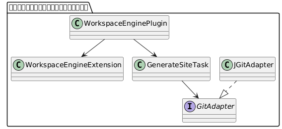
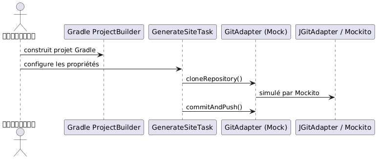

TDD ของ Plugin Gradle Kotlin ที่ปรับแต่งค่าได้ด้วย JBake และ JGit
เผยแพร่เมื่อ 09 July 2025
บทความนี้จะนำเสนอกระบวนการออกแบบและทดสอบ (TDD) แบบครบวงจรของ Gradle plugin ที่เขียนด้วย Kotlin DSL โดย plugin นี้จะช่วยเปลี่ยนการสร้างไซต์สถิตด้วย JBake และการ déploiement Git ผ่าน JGit ให้เป็นระบบอัตโนมัติ ทั้งหมดนี้ทำงานผ่านไฟล์กำหนดค่า YAML
เป้าหมาย
สร้าง Gradle plugin:
-
สามารถกำหนดค่าได้ใน Kotlin DSL ;
-
สามารถ:
-
สร้างไซต์แบบสแตติกจาก
JBake; -
ปรับใช้บน Git repository ระยะไกลผ่าน JGit ;
-
สามารถรวมเข้ากับ workflow CI/CD ได้ ;
-
ทดสอบตามแนวทาง TDD
การกำหนดค่าแบบประกาศ (Declarative Configuration)
นี่คือตัวอย่างการกำหนดค่า YAML ที่ต้องนำมาสร้างแบบจำลองใน DSL ของเรา:
bake:
srcPath: "./site/jbake"
destDirPath: "bake"
pushPage:
from: "bake"
to: "cvs"
repo:
name: "trainings"
repository: "https://github.com/pages-content/trainings.git"
credentials:
username: "USERNAME"
password: "SECRET_TOKEN"
branch: "main"
message: "cheroliv.com"การกำหนดค่านี้ถูกนำเสนอผ่าน Gradle extension ที่สามารถประกาศได้ด้วย Kotlin DSL
สถาปัตยกรรมของปลั๊กอิน

คำจำกัดความของส่วนขยาย DSL
open class WorkspaceEngineExtension {
var outputDir: String = "build/site"
var template: String = "freemarker"
var repoUrl: String = ""
var branch: String = "main"
var message: String = "Generated by engine"
}คำจำกัดความของงานที่กำหนดเอง
abstract class GenerateSiteTask : DefaultTask() {
lateinit var gitAdapter: GitAdapter
@get:Input abstract val repoUrl: Property<String>
@get:InputDirectory abstract val outputDir: DirectoryProperty
@get:Input abstract val branch: Property<String>
@get:Input abstract val message: Property<String>
@TaskAction
fun run() {
val repo = gitAdapter.cloneRepository(repoUrl.get(), outputDir.get().asFile)
gitAdapter.commitAndPush(repo, branch.get(), message.get())
}
}อินเทอร์เฟซ GitAdapter
interface GitAdapter {
fun cloneRepository(uri: String, directory: File): Repository
fun commitAndPush(repo: Repository, branch: String, message: String)
}การนำไปใช้งานจริงด้วย JGit
class JGitAdapter : GitAdapter {
override fun cloneRepository(uri: String, directory: File): Repository {
return Git.cloneRepository()
.setURI(uri)
.setDirectory(directory)
.call()
.repository
}
override fun commitAndPush(repo: Repository, branch: String, message: String) {
Git(repo).use {
it.add().addFilepattern(".").call()
it.commit().setMessage(message).call()
it.push().call()
}
}
}Configuration DSL Kotlin
workspaceEngine {
outputDir = "build/out"
template = "freemarker"
repoUrl = "https://github.com/cheroliv/trainings.git"
branch = "main"
message = "deploy from plugin"
}การทดสอบแบบ Unit Test ด้วย Mockito
สิ่งที่ต้องพึ่งพา
testImplementation("org.mockito:mockito-core:5.12.0")
testImplementation("org.mockito.kotlin:mockito-kotlin:5.2.1")
testImplementation("org.junit.jupiter:junit-jupiter:5.10.0")การทดสอบพฤติกรรมของ Git
class GenerateSiteTaskMockitoTest {
@TempDir
lateinit var tempDir: File
@Test
fun `task should call clone and commitAndPush`() {
val project = ProjectBuilder.builder().build()
val task = project.tasks.create("generateSite", GenerateSiteTask::class.java)
val mockGitAdapter = mock<GitAdapter>()
val mockRepo = mock<Repository>()
whenever(mockGitAdapter.cloneRepository(any(), any())).thenReturn(mockRepo)
task.gitAdapter = mockGitAdapter
task.repoUrl.set("https://github.com/cheroliv/test.git")
task.outputDir.set(project.layout.projectDirectory.dir(tempDir.name))
task.branch.set("main")
task.message.set("test commit")
task.run()
verify(mockGitAdapter).cloneRepository(eq("https://github.com/cheroliv/test.git"), any())
verify(mockGitAdapter).commitAndPush(eq(mockRepo), eq("main"), eq("test commit"))
}
}
บทสรุป
การแยกความรับผิดชอบผ่าน`GitAdapter`ช่วยให้สามารถนำ TDD มาใช้ได้อย่างเต็มที่ในการพัฒนา Gradle plugin:
-
การเรียกใช้ Git นั้นเป็นแบบนามธรรมและสามารถทดสอบได้ ;
-
การกำหนดค่า DSL นั้นสะอาดและชัดเจน ;
-
ปลั๊กอินยังคงความเป็น agnostique ต่อการนำไปใช้งานจริง (implementation)
แนวทางนี้ช่วยให้มั่นใจได้ถึงความสามารถในการทดสอบและการขยายระบบที่สูง (ไปยัง GitHub API, GitLab และอื่นๆ)
ขั้นตอนต่อไป
-
รวมการสร้าง JBake เข้าเป็นหนึ่งใน`BakeAdapter`
-
เพิ่มการทดสอบการรวมระบบด้วย`GradleRunner`
-
รองรับการโหลดไฟล์อัตโนมัติ`site.yml`ผ่าน SnakeYAML